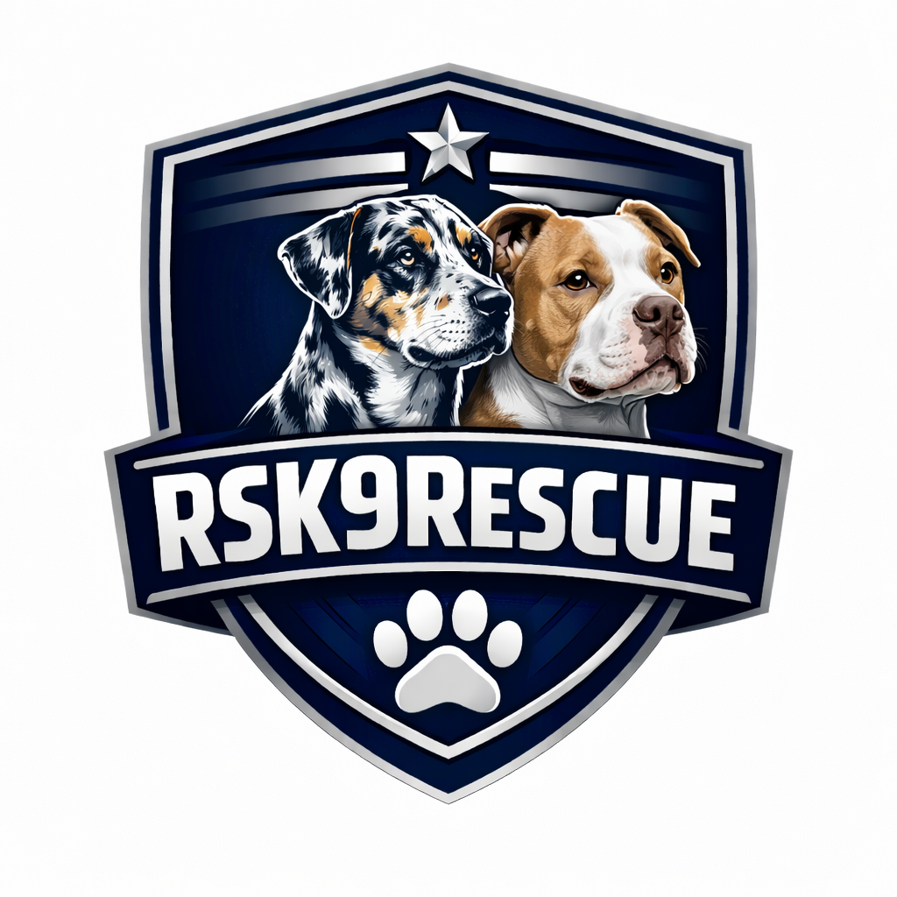
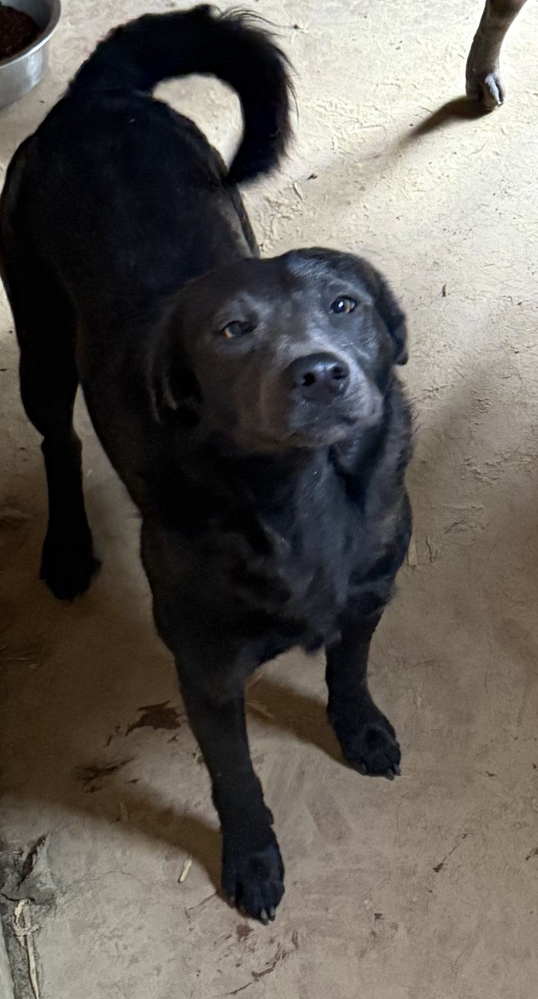
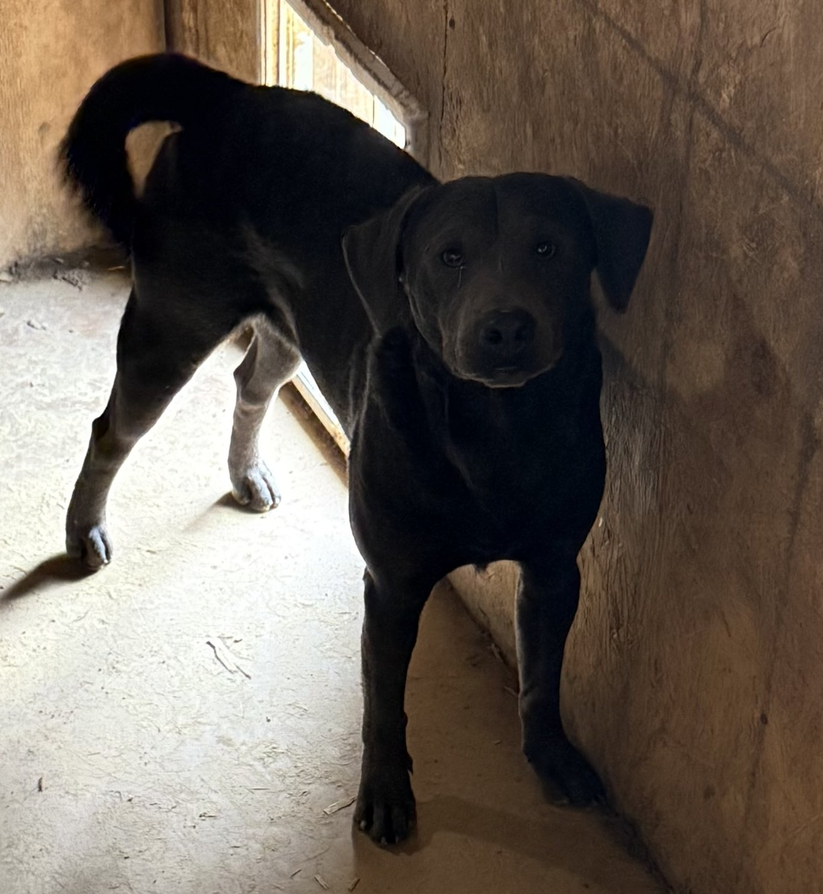
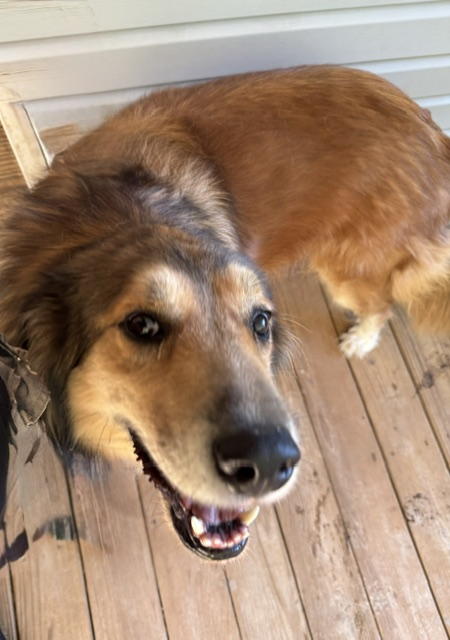

RS Canine Rescue is dedicated to saving dogs across rural South Mississippi, providing care, compassion, and second chances.
We rescue, rehabilitate, and rehome dogs in need across rural communities.
Our work focuses on saving lives, reducing overpopulation, and supporting families and pets through education and community outreach.
RS Canine Rescue serves rural South Mississippi, focusing on saving dogs in communities with limited resources, high overpopulation, and few dedicated rescue organizations.
We are based in Sumrall, Mississippi, serving Lamar, Forrest, Perry, Marion, and Jefferson Davis Counties.
Our rescue is built on compassion, community involvement, and a commitment to giving dogs the second chance they deserve.
We work with volunteers, fosters, transport partners, and adopters across the region to ensure every dog receives the care and love they need.

Young, energetic, and loyal. Great with active families and other dogs.

Calm, gentle, and affectionate. Perfect companion for a quiet home.

Confident, playful, and smart. Loves training and interaction.
Dog Name — Short description of the dog.
Dog Name — Short description of the dog.
Dog Name — Short description of the dog.
Volunteers are the backbone of RS Canine Rescue.
Whether you’re helping with transport, fostering, events, or daily care, your time makes a life-changing impact.
Every dollar makes a difference.
Your support helps us rescue, rehabilitate, and rehome dogs across rural Mississippi.
Donate via PayPalWe’re here to help.
Reach out with questions about adoption, volunteering, or supporting our mission.
Email: info@rscaninerescue.org
Location: Sumrall, MS